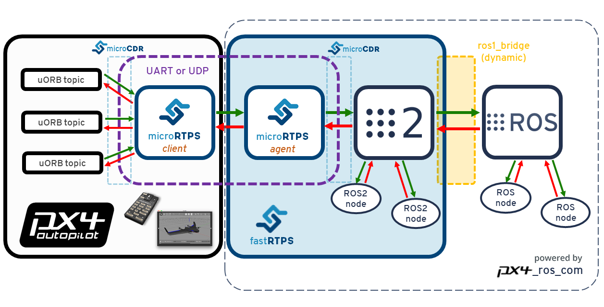

RTPS/ROS2 Interface: PX4-FastRTPS Bridge
The PX4-FastRTPS Bridge adds a Real Time Publish Subscribe (RTPS) interface to PX4, enabling the exchange of uORB messages between PX4 components and (offboard) Fast RTPS applications (including those built using the ROS2/ROS frameworks).
RTPS is the underlying protocol of the Object Management Group's (OMG) Data Distribution Service (DDS) standard. It aims to enable scalable, real-time, dependable, high-performance and inter-operable data communication using the publish/subscribe pattern. Fast RTPS is a very lightweight cross-platform implementation of the latest version of the RTPS protocol and a minimum DDS API.
RTPS has been adopted as the middleware for the ROS2 (Robot Operating System). The Fast RTPS bridge allows us to better integrate with ROS2, making it easy to share sensor values, commands, and other vehicle information.
This topic describes the RTPS bridge architecture (and how it is used within the ROS2/ROS application pipeline). It also shows how to compile needed code to:
- Write a simple Fast RTPS application to subscribe to PX4 changes
- Connect ROS2 nodes with PX4 (via the RTPS Bridge, and using the
px4_ros_compackage) - Connect ROS (ROS "version 1") nodes with PX4 by additionally using the
ros1_bridgepackage to bridge ROS2 and ROS.
When should RTPS be used?
RTPS should be used when you need to reliably share time-critical/real-time information between the flight controller and off board components. In particular it is useful in cases where off-board software needs to become a peer of software components running in PX4 (by sending and receiving uORB topics).
Possible use cases include communicating with robotics libraries for computer vision, and other use cases where real time data to/from actuators and sensors is essential for vehicle control.
Fast RTPS is not intended as a replacement for MAVLink. MAVLink remains the most appropriate protocol for communicating with ground stations, gimbals, cameras, and other offboard components (although Fast RTPS may open other opportunities for working with some peripherals).
RTPS can be used over slower links (e.g. radio telemetry), but care should be taken not to overload the channel.
Architectural overview
RTPS Bridge
The RTPS bridge exchanges messages between PX4 and RTPS applications, seamlessly converting between the uORB and RTPS messages used by each system.

The main elements of the architecture are the client and agent processes shown in the diagram above.
- The Client is PX4 middleware daemon process that runs on the flight controller. It subscribes to uORB topics published by other PX4 components and sends any updates to the Agent (via a UART or UDP port). It also receives messages from the Agent and publishes them as uORB message on PX4.
- The Agent runs as a daemon process on an offboard computer. It watches for uORB update messages from the Client and (re)publishes them over RTPS. It also subscribes to "uORB" RTPS messages from other RTPS applications and forwards them to the Client.
- The Agent and Client are connected via a serial link (UART) or UDP network. The uORB information is CDR serialized for sending (CDR serialization provides a common format for exchanging serial data between different platforms).
- The Agent and any Fast RTPS applications are connected via UDP, and may be on the same or another device. In a typical configuration they will both be on the same system (e.g. a development computer, Linux companion computer or compute board), connected to the Client over a Wifi link or via USB.
ROS2/ROS application pipeline
The application pipeline for ROS2 is very straightforward! Because ROS2 uses DDS/RTPS as its native communications middleware, you can create a ROS2 listener or advertiser node to publish and subscribe to uORB data on PX4, via the PX4 Fast RTPS Bridge. This is shown below.
You do need to make sure that the message types, headers and source files used on both client and agent side (and consequently, on the ROS nodes) are generated from the same Interface Description Language (IDL) files. The
px4_ros_compackage provides the needed infrastructure for generating messages and headers needed by ROS2.

The architecture for integrating ROS applications with PX4 is shown below.

Note the use of ros1_bridge, which bridges messages between ROS2 and ROS. This is needed because the first version of ROS does not support RTPS.
Code generation
ROS-independent applications
All the code needed to create, build and use the bridge is automatically generated when the PX4 Firmware is compiled.
The Client application is also compiled and built into the firmware as part of the normal build process. The Agent must be separately/manually compiled for the target computer.
Fast RTPS must be installed in order to generate the required code!
The bridge code can also be manually generated. Most users will not need to do so, but the linked topic provides a more detailed overview of the build process and can be useful for troubleshooting.
ROS2/ROS applications
The px4_ros_com package, when built, generates everything needed to access PX4 uORB messages from a ROS2 node (for ROS you also need ros1_bridge).
This includes all the required components of the *PX4 RTPS bridge, including the IDL files (required by the micrortps_agent), the micrortps_agent itself and the sources and headers of the ROS messages.
The package has two separate branches:
- a
masterbranch, used with ROS2. It contains code to generate all the required ROS2 messages and IDL files to bridge PX4 with ROS2 nodes. - a
ros1branch, used with ROS. It contains code to generate the ROS message headers and source files, which can be used with theros1_bridgeto share data between PX4 and ROS.
Both branches additionally include some example listener and advertiser example nodes.
Supported uORB messages
The generated bridge code will enable a specified subset of uORB topics to be published/subscribed via RTPS. This is true for both ROS or non-ROS applications.
For automatic code generation there's a yaml definition file in the PX4 Firmware/msg/tools/ directory called uorb_rtps_message_ids.yaml. This file defines the set of uORB messages to be used with RTPS, whether the messages are to be sent, received or both, and the RTPS ID for the message to be used in DDS/RTPS middleware.
An RTPS ID must be set for all messages.
rtps:
- msg: actuator_armed
id: 0
- msg: actuator_control
id: 1
- ...
- msg: airspeed
id: 5
send: true
- msg: battery_status
id: 6
send: true
- msg: camera_capture
id: 7
- msg: camera_trigger
id: 8
receive: true
- ...
- msg: sensor_baro
id: 63
receive: true
send: true
The
px4_ros_combuild process (only) runs the CMake macrorosidl_generate_interfaces()to generate ROS2 IDL files and all the source and header files for each message. The PX4 Firmware includes a template for the IDL file generation, which is only used during the PX4 build process.The
px4_ros_combuild generates slightly different IDL files for use with ROS2/ROS (than are built for PX4 firmware). The uorb_rtps_message_ids.yaml is transformed in a way that the message names become PascalCased (the name change is irrelevant to the client-agent communication, but is critical for ROS2, since the message naming must follow the PascalCase convention). The new IDL files also reverse the messages that are sent and received (required because if a message is sent from the client side, then it's received on the agent side, and vice-versa).
Client (PX4 Firmware)
The Client source code is generated, compiled and built into the PX4 firmware as part of the normal build process.
To build the firmware for NuttX/Pixhawk flight controllers use the _rtps feature in the configuration target.
For example, to build RTPS for px4_fmu-v4:
make px4_fmu-v4_rtps
To build the firmware for a SITL target:
make px4_sitl_rtps
The Client application can be launched from NuttShell/System Console. The command syntax is shown below (you can specify a variable number of arguments):
> micrortps_client start|stop [options]
-t <transport> [UART|UDP] Default UART
-d <device> UART device. Default /dev/ttyACM0
-u <update_time_ms> Time in ms for uORB subscribed topics update. Default 0
-l <loops> How many iterations will this program have. -1 for infinite. Default -1.
-w <sleep_time_ms> Time in ms for which each iteration sleep. Default 1ms
-b <baudrate> UART device baudrate. Default 460800
-p <poll_ms> Time in ms to poll over UART. Default 1ms
-r <reception port> UDP port for receiving. Default 2019
-s <sending port> UDP port for sending. Default 2020
By default the Client runs as a daemon, but you will need to start it manually. The PX4 Firmware initialization code may in future automatically start the Client as a permanent daemon process.
For example, in order to run the Client daemon with SITL connecting to the Agent via UDP, start the daemon as shown:
micrortps_client start -t UDP
Agent in a ROS-independent Offboard Fast RTPS interface
The Agent code is automatically generated when you build the associated PX4 firmware.
You can find the source here: build/
To build the Agent application, compile the code:
cd build/<target-platform>/src/modules/micrortps_bridge/micrortps_client/micrortps_agent
mkdir build && cd build
cmake ..
make
To cross-compile for the Qualcomm Snapdragon Flight platform see this link.
The command syntax for the Agent is listed below:
$ ./micrortps_agent [options]
-t <transport> [UART|UDP] Default UART.
-d <device> UART device. Default /dev/ttyACM0.
-w <sleep_time_us> Time in us for which each iteration sleep. Default 1ms.
-b <baudrate> UART device baudrate. Default 460800.
-p <poll_ms> Time in ms to poll over UART. Default 1ms.
-r <reception port> UDP port for receiving. Default 2019.
-s <sending port> UDP port for sending. Default 2020.
To launch the Agent, run micrortps_agent with appropriate options for specifying the connection to the Client (the default options connect from a Linux device to the Client over a UART port).
As an example, to start the micrortps_agent with connection through UDP, issue:
./micrortps_agent -t UDP
Agent interfacing with a ROS2 middleware
Building px4_ros_com automatically generates and builds the agent application.
Since it is also installed using the colcon build tools, running it works exactly the same way as the above.
Check the Building the px4_ros_com package for details about the build structure.
Building the px4_ros_com package
Before building px4_ros_com you will first need to clone the PX4 Firmware repository
(this is normally placed at the same tree level as the ROS workspaces).
Then install and setup both ROS2 and ROS environments on your development machine
and separately clone the px4_ros_com repo for both the master and ros1 branches (see above for more information).
Only the master branch is needed for ROS2 (both are needed to target ROS).
Installing ROS and ROS2 and respective dependencies
In order to install ROS Melodic and ROS2 Bouncy on a Ubuntu 18.04 machine, follow the links below, respectively:
Install the following component to ensure that the package properly generates the IDL files:
sudo apt install ros-bouncy-rmw-opensplice-cpp
The install process should also install the colcon build tools, but in case that doesn't happen, you can install the tools manually:
sudo apt install python3-colcon-common-extensions
This install and build guide is also applicable in an environment with Ubuntu 16.04, ROS Kinetic and ROS2 Ardent installed.
Do not install the
ros1_bridgepackage through the deb repository. The package must be built from source.
Setting up the workspaces
Since the ROS2 and ROS require different environments you will need a separate workspace for each ROS version. As an example:
For ROS2, create a workspace using:
mkdir -p ~/px4_ros_com_ros2/srcThen, clone the respective ROS2 (
master) branch to the/srcdirectory:$ git clone https://github.com/PX4/px4_ros_com.git ~/px4_ros_com_ros2/src/px4_ros_com # clones the master branchFor ROS, follow exactly the same process, but create a different directory and clone a different branch:
mkdir -p ~/px4_ros_com_ros1/srcThen, clone the respective ROS2 (
master) branch to the/srcdirectory:$ git clone https://github.com/PX4/px4_ros_com.git ~/px4_ros_com_ros1/src/px4_ros_com # clones the 'ros1' branch
Building the workspaces
To build the workspace, just run build_ros2_side.bash (in directory px4_ros_com/scripts).
The steps below show how to manually build the packages (provided for your information/better understanding only):
cdintopx4_ros_com_ros2dir and source the ROS2 environment. Don't mind if it tells you that a previous workspace was set before:source /opt/ros/bouncy/setup.bashClone the
ros1_bridgepackage so it can be built on the ROS2 workspace:git clone https://github.com/ros2/ros1_bridge.git ~/px4_ros_com_ros2/src/ros1_bridgeBuild the
px4_ros_compackage, excluding theros1_bridgepackage:colcon build --symlink-install --packages-skip ros1_bridge --event-handlers console_direct+--event-handlers console_direct+only serves the purpose of adding verbosity to thecolconbuild process and can be removed if one wants a more "quiet" build.Then, follows the process of building the ROS(1) packages side. For that, one requires to source the environments so when the
ros1_bridgeis built with support for any messages that are on PATH and have an associated mapping between ROS1 and ROS2:source /opt/ros/melodic/setup.bash source /opt/ros/bouncy/setup.bashBuild the
px4_ros_compackage on the ROS end:cd ~/px4_ros_com_ros1 && colcon build --symlink-install --event-handlers console_direct+Then source the workspaces:
source ~/px4_ros_com_ros1/install/setup.bash source ~/px4_ros_com_ros2/install/setup.bashFinally, build the
ros1_bridge. Note that the build process may consume a lot of memory resources. On a resource limited machine, reduce the number of jobs being processed in parallel (e.g. set environment variableMAKEFLAGS=-j1). For more details on the build process, see the build instructions on the ros1_bridge package page.cd ~/px4_ros_com_ros2 && colcon build --symlink-install --packages-select ros1_bridge --cmake-force-configure --event-handlers console_direct+
Creating a Fast RTPS Listener application
Once the Client (on the flight controller) and the Agent (on an offboard computer) are running and connected, Fast RTPS applications can publish and subscribe to uORB topics on PX4 using RTPS.
This example shows how to create a Fast RTPS "listener" application that subscribes to the sensor_combined topic and prints out updates (from PX4).
A connected RTPS application can run on any computer on the same network as the Agent.
For this example the Agent and Listener application will be on the same computer.
The fastrtpsgen script can be used to generate a simple RTPS application from an IDL message file.
RTPS messages are defined in IDL files and compiled to C++ using fastrtpsgen. As part of building the bridge code, IDL files are generated for the uORB message files that may be sent/received (see build/BUILDPLATFORM/src/modules/micrortps_bridge/micrortps_agent/idl/*.idl). These IDL files are needed when you create a Fast RTPS application to communicate with PX4.
Enter the following commands to create the application:
cd /path/to/PX4/Firmware/src/modules/micrortps_bridge
mkdir micrortps_listener
cd micrortps_listener
fastrtpsgen -example x64Linux2.6gcc ../micrortps_agent/idl/sensor_combined_.idl
This creates a basic subscriber and publisher, and a main-application to run them.
To print out the data from the sensor_combined topic, modify the onNewDataMessage() method in sensor_combined_Subscriber.cxx:
void sensor_combined_Subscriber::SubListener::onNewDataMessage(Subscriber* sub)
{
// Take data
sensor_combined_ st;
if(sub->takeNextData(&st, &m_info))
{
if(m_info.sampleKind == ALIVE)
{
// Print your structure data here.
++n_msg;
std::cout << "\n\n\n\n\n\n\n\n\n\n";
std::cout << "Sample received, count=" << n_msg << std::endl;
std::cout << "=============================" << std::endl;
std::cout << "gyro_rad: " << st.gyro_rad().at(0);
std::cout << ", " << st.gyro_rad().at(1);
std::cout << ", " << st.gyro_rad().at(2) << std::endl;
std::cout << "gyro_integral_dt: " << st.gyro_integral_dt() << std::endl;
std::cout << "accelerometer_timestamp_relative: " << st.accelerometer_timestamp_relative() << std::endl;
std::cout << "accelerometer_m_s2: " << st.accelerometer_m_s2().at(0);
std::cout << ", " << st.accelerometer_m_s2().at(1);
std::cout << ", " << st.accelerometer_m_s2().at(2) << std::endl;
std::cout << "accelerometer_integral_dt: " << st.accelerometer_integral_dt() << std::endl;
std::cout << "magnetometer_timestamp_relative: " << st.magnetometer_timestamp_relative() << std::endl;
std::cout << "magnetometer_ga: " << st.magnetometer_ga().at(0);
std::cout << ", " << st.magnetometer_ga().at(1);
std::cout << ", " << st.magnetometer_ga().at(2) << std::endl;
std::cout << "baro_timestamp_relative: " << st.baro_timestamp_relative() << std::endl;
std::cout << "baro_alt_meter: " << st.baro_alt_meter() << std::endl;
std::cout << "baro_temp_celcius: " << st.baro_temp_celcius() << std::endl;
}
}
}
To build and run the application on Linux:
make -f makefile_x64Linux2.6gcc
bin/*/sensor_combined_PublisherSubscriber subscriber
Now you should see the sensor information being printed out:
Sample received, count=10119
Received sensor_combined data
=============================
gyro_rad: -0.0103228, 0.0140477, 0.000319406
gyro_integral_dt: 0.004
accelerometer_timestamp_relative: 0
accelerometer_m_s2: -2.82708, -6.34799, -7.41101
accelerometer_integral_dt: 0.004
magnetometer_timestamp_relative: -10210
magnetometer_ga: 0.60171, 0.0405879, -0.040995
baro_timestamp_relative: -17469
baro_alt_meter: 368.647
baro_temp_celcius: 43.93
If the Listener application does not print anything, make sure the Client is running.
Creating a ROS2 listener
With the px4_ros_com built successfully, one can now take advantage of the generated micro-RTPS agent app and also from the generated sources and headers of the ROS2 msgs, which represent a one-to-one matching with the uORB counterparts.
To create a listener node on ROS2, lets take as an example the sensor_combined_listener.cpp node under px4_ros_com/src/listeners:
#include <rclcpp/rclcpp.hpp>
#include <px4_ros_com/msg/sensor_combined.hpp>
The above brings to use the required C++ libraries to interface with the ROS2 middleware. It also includes the required message header file.
/**
* @brief Sensor Combined uORB topic data callback
*/
class SensorCombinedListener : public rclcpp::Node
{
The above creates a SensorCombinedListener class that subclasses the generic rclcpp::Node base class.
public:
explicit SensorCombinedListener() : Node("sensor_combined_listener") {
auto callback =
[this](const px4_ros_com::msg::SensorCombined::SharedPtr msg)->void
{
std::cout << "\n\n\n\n\n\n\n\n\n\n\n\n\n\n\n\n\n\n\n\n\n\n\n\n";
std::cout << "RECEIVED DATA ON SENSOR COMBINED" << std::endl;
std::cout << "================================" << std::endl;
std::cout << "gyro_rad[0]: " << msg->gyro_rad[0] << std::endl;
std::cout << "gyro_rad[1]: " << msg->gyro_rad[1] << std::endl;
std::cout << "gyro_rad[2]: " << msg->gyro_rad[2] << std::endl;
std::cout << "gyro_integral_dt: " << msg->gyro_integral_dt << std::endl;
std::cout << "accelerometer_timestamp_relative: " << msg->accelerometer_timestamp_relative << std::endl;
std::cout << "accelerometer_m_s2[0]: " << msg->accelerometer_m_s2[0] << std::endl;
std::cout << "accelerometer_m_s2[1]: " << msg->accelerometer_m_s2[1] << std::endl;
std::cout << "accelerometer_m_s2[2]: " << msg->accelerometer_m_s2[2] << std::endl;
std::cout << "accelerometer_integral_dt: " << msg->accelerometer_integral_dt << std::endl;
};
This creates a callback function for when the sensor_combined messages are received.
It outputs the content of the message fields each time the message is received.
subscription_ = this->create_subscription<px4_ros_com::msg::SensorCombined>("SensorCombined_topic", callback);
}
private:
rclcpp::Subscription<px4_ros_com::msg::SensorCombined>::SharedPtr subscription_;
};
The above create a subscription to the sensor_combined_topic which can be matched with one or more compatible ROS publishers.
int main(int argc, char *argv[])
{
std::cout << "Starting sensor_combined listener node..." << std::endl;
setvbuf(stdout, NULL, _IONBF, BUFSIZ);
rclcpp::init(argc, argv);
rclcpp::spin(std::make_shared<SensorCombinedListener>());
rclcpp::shutdown();
return 0;
}
The instantiation of the SensorCombinedListener class as a ROS node is done on the main function.
Creating a ROS2 advertiser
A ROS2 advertiser node publishes data into the DDS/RTPS network (and hence to PX4).
Taking as an example the debug_vect_advertiser.cpp under px4_ros_com/src/listeners:
#include <chrono>
#include <rclcpp/rclcpp.hpp>
#include <px4_ros_com/msg/debug_vect.hpp>
using namespace std::chrono_literals;
Bring in the required headers, including the debug_vect msg header.
class DebugVectAdvertiser : public rclcpp::Node
{
The above creates a DebugVectAdvertiser class that subclasses the generic rclcpp::Node base class.
public:
DebugVectAdvertiser() : Node("debug_vect_advertiser") {
publisher_ = this->create_publisher<px4_ros_com::msg::DebugVect>("DebugVect_topic");
auto timer_callback =
[this]()->void {
auto debug_vect = px4_ros_com::msg::DebugVect();
debug_vect.timestamp = this->now().nanoseconds() * 1E-3;
debug_vect.x = 1.0;
debug_vect.y = 2.0;
debug_vect.z = 3.0;
RCLCPP_INFO(this->get_logger(), "Publishing debug_vect: time: %f x:%f y:%f z:%f",
debug_vect.timestamp, debug_vect.x, debug_vect.y, debug_vect.z)
this->publisher_->publish(debug_vect);
};
timer_ = this->create_wall_timer(500ms, timer_callback);
}
private:
rclcpp::TimerBase::SharedPtr timer_;
rclcpp::Publisher<px4_ros_com::msg::DebugVect>::SharedPtr publisher_;
};
This creates a function for when messages are to be sent. The messages are sent based on a timed callback, which sends two messages per second based on a timer.
int main(int argc, char *argv[])
{
std::cout << "Starting debug_vect advertiser node..." << std::endl;
setvbuf(stdout, NULL, _IONBF, BUFSIZ);
rclcpp::init(argc, argv);
rclcpp::spin(std::make_shared<DebugVectAdvertiser>());
rclcpp::shutdown();
return 0;
}
The instantiation of the DebugVectAdvertiser class as a ROS node is done on the main function.
Creating a ROS listener
The creation of ROS nodes is a well known and documented process.
An example of a ROS listener for sensor_combined messages can be found in the ros1 branch repo, under px4_ros_com/src/listeners.
Examples/tests of ROS-independent apps
The following examples provide additional real-world demonstrations of how to use the features described in this topic.
- Throughput test: A simple test to measure the throughput of the bridge.
Testing the PX4-FastRPTS bridge with ROS2 and ROS
To quickly test the package (using PX4 SITL with Gazebo):
Start the PX4 SITL with Gazebo using:
make px4_sitl_rtps gazebo`On one terminal, source the ROS2 environment and workspace and launch the
ros1_bridge(this allows ROS2 and ROS nodes to communicate with each other). Also set theROS_MASTER_URIwhere theroscoreis/will be running:$ source /opt/ros/ardent/setup.bash $ source ~/px4_ros_com_ros2/install/setup.bash $ export ROS_MASTER_URI=http://localhost:11311 $ ros2 run ros1_bridge dynamic_bridgeOn another terminal, source the ROS workspace and launch the
sensor_combinedlistener node. Since you are launching throughroslaunch, this will also automatically start theroscore:$ source ~/px4_ros_com_ros1/install/setup.bash $ roslaunch px4_ros_com sensor_combined_listener.launchOn a terminal, source the ROS2 workspace and then start the
micrortps_agentdaemon with UDP as the transport protocol:$ source ~/px4_ros_com_ros2/install/setup.bash $ micrortps_agent -t UDPOn the NuttShell/System Console, start the
micrortps_clientdaemon also in UDP:> micrortps_client start -t UDPNow you will be able to see the data being printed on the terminal/console where you launched the ROS listener:
RECEIVED DATA FROM SENSOR COMBINED ================================ gyro_rad[0]: 0.00341645 gyro_rad[1]: 0.00626475 gyro_rad[2]: -0.000515705 gyro_integral_dt: 4739 accelerometer_timestamp_relative: 0 accelerometer_m_s2[0]: -0.273381 accelerometer_m_s2[1]: 0.0949186 accelerometer_m_s2[2]: -9.76044 accelerometer_integral_dt: 4739 Publishing back...You can also verify the rate of the message using
rostopic hz. For the case ofsensor_combined:average rate: 248.187 min: 0.000s max: 0.012s std dev: 0.00147s window: 2724 average rate: 248.006 min: 0.000s max: 0.012s std dev: 0.00147s window: 2972 average rate: 247.330 min: 0.000s max: 0.012s std dev: 0.00148s window: 3212 average rate: 247.497 min: 0.000s max: 0.012s std dev: 0.00149s window: 3464 average rate: 247.458 min: 0.000s max: 0.012s std dev: 0.00149s window: 3712 average rate: 247.485 min: 0.000s max: 0.012s std dev: 0.00148s window: 3960You can also test the
sensor_combinedROS2 listener by typing in a terminal:$ source ~/px4_ros_com_ros2/install/setup.bash $ sensor_combined_listener # or ros2 run px4_ros_com sensor_combined_listener
And it should also get data being printed to the console output.
Troubleshooting
Client reports that selected UART port is busy
If the selected UART port is busy, it's possible that the MAVLink application is already being used. If both MAVLink and RTPS connections are required you will have to either move the connection to use another port or configure the port so that it can be shared.
A quick/temporary fix to allow bridge testing during development is to stop MAVLink from NuttShell:
mavlink stop-all
Agent not built/fastrtpsgen is not found
The Agent code is generated using a Fast RTPS tool called fastrtpsgen.
If you haven't installed Fast RTPS in the default path then you must specify its installation directory by setting the FASTRTPSGEN_DIR environment variable before executing make.
On Linux/Mac this is done as shown below:
export FASTRTPSGEN_DIR=/path/to/fastrtps/install/folder/bin
This should not be a problem if Fast RTPS is installed in the default location.
Enable UART on an OBC (onboard computer)
For UART transport on a Raspberry Pi or any other OBC you will have to enable the serial port:
Make sure the
userid(default is pi on a Raspberry Pi) is a member of thedialoutgroup:groups pi sudo usermod -a -G dialout piFor the Raspberry Pi in particular, you need to stop the GPIO serial console that is using the port:
sudo raspi-configIn the menu showed go to Interfacing options > Serial. Select NO for Would you like a login shell to be accessible over serial?. Valid and reboot.
Check UART in kernel:
sudo vi /boot/config.txtAnd make sure that the
enable_uartvalue is set to 1:enable_uart=1